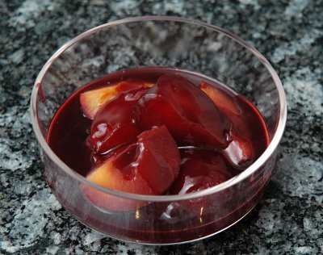

| Zutaten für 4 Personen: | |
| 5 dl | Rotwein |
| 1 | Zimtstengel |
| 200 g | Zucker |
| 1 | Zitrone |
| 1 kg | Zwetschgen |
| 2 EL | Maizena |
Rotwein mit Zimt, Zucker und Zitrone (Saft und Schale) aufkochen.
Die halbierten und entsteinten Zwetschgen beigeben und knapp weichkochen.
Die Zwetschgen herausnehmen und in einer Schüssel oder Portionenschale anrichten.
Zimtstengel herausnehmen.
2 EL Maizena mit wenig Wasser anrühren, in die zurückbleibende Flüssigkeit geben und unter Rühren kurz aufkochen, über die Zwetschgen verteilen, alles erkalten lassen.
Herbert Eigenmann, Code: ZWW
War irgendwie säuerlich. Die Zwetschgen waren aber auch nicht die besten. RE 30.10.2009
@LINKBACK_TAG@ @WAKELOCK@